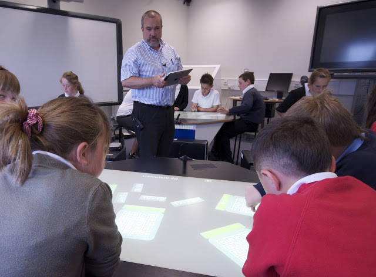

networking
iPad meets SynergyNet
The SynergyNet team got to bring some of their favourite things together this week – multi-touch technology, maths classes and really pretty hardware. See the photos below of Prof Steve Higgins running the mulit-touch tables and managing the classroom from his ipad, while the students worked on our newest application, NumberNet:


Networked content in use: Network Flick
Building on the Networked capabilities of the SynergyNet system, objects can be passed between tables. In the video below, the first group of school children pass images between their tables – to the excitement of the children and the SynergyNet team!
Replicating Tables
Here’s a sneak preview of our ability to replicate student tables onto the teacher console. Each view of the student’s table is, of course, a multi-touch element that can be moved, rotated, etc. Iyad has plans to do something quite amazing in the next iteration… stay tuned.
Early Networking Capability
A key capability of our multi-touch software is in the ability to leverage robust networking. After Tom Barrett‘s recent visit, we were prompted to showcase some of the capability and sent him a video.